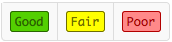
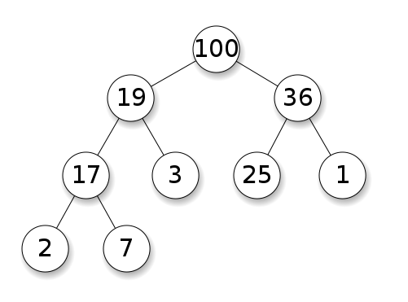
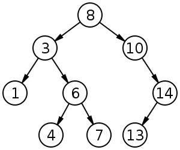

C++ Data Structures and Algorithms Cheat Sheet
Table of Contents
- C++ Data Structures and Algorithms Cheat Sheet
1.0 Data Structures
1.1 Overview



1.2 Vector std::vector
Use for
- Simple storage
- Adding but not deleting
- Serialization
- Quick lookups by index
- Easy conversion to C-style arrays
- Efficient traversal (contiguous CPU caching)
Do not use for
- Insertion/deletion in the middle of the list
- Dynamically changing storage
- Non-integer indexing
Time Complexity
| Operation | Time Complexity |
|---|---|
| Insert Head | O(n) |
| Insert Index | O(n) |
| Insert Tail | O(1) |
| Remove Head | O(n) |
| Remove Index | O(n) |
| Remove Tail | O(1) |
| Find Index | O(1) |
| Find Object | O(n) |
Example Code
std::vector<int> v;
//---------------------------------
// General Operations
//---------------------------------
// Size
unsigned int size = v.size();
// Insert head, index, tail
v.insert(v.begin(), value); // head
v.insert(v.begin() + index, value); // index
v.push_back(value); // tail
// Access head, index, tail
int head = v.front(); // head
head = v[0]; // or using array style indexing
int value = v.at(index); // index
value = v[index]; // or using array style indexing
int tail = v.back(); // tail
tail = v[v.size() - 1]; // or using array style indexing
// Iterate
for(std::vector<int>::iterator it = v.begin(); it != v.end(); it++) {
std::cout << *it << std::endl;
}
// Remove head, index, tail
v.erase(v.begin()); // head
v.erase(v.begin() + index); // index
v.pop_back(); // tail
// Clear
v.clear();
1.3 Deque std::deque
Use for
- Similar purpose of
std::vector - Basically
std::vectorwith efficientpush_frontandpop_front
Do not use for
- C-style contiguous storage (not guaranteed)
Notes
- Pronounced 'deck'
- Stands for Double Ended Queue
Time Complexity
| Operation | Time Complexity |
|---|---|
| Insert Head | O(1) |
| Insert Index | O(n) or O(1) |
| Insert Tail | O(1) |
| Remove Head | O(1) |
| Remove Index | O(n) |
| Remove Tail | O(1) |
| Find Index | O(1) |
| Find Object | O(n) |
Example Code
std::deque<int> d;
//---------------------------------
// General Operations
//---------------------------------
// Insert head, index, tail
d.push_front(value); // head
d.insert(d.begin() + index, value); // index
d.push_back(value); // tail
// Access head, index, tail
int head = d.front(); // head
int value = d.at(index); // index
int tail = d.back(); // tail
// Size
unsigned int size = d.size();
// Iterate
for(std::deque<int>::iterator it = d.begin(); it != d.end(); it++) {
std::cout << *it << std::endl;
}
// Remove head, index, tail
d.pop_front(); // head
d.erase(d.begin() + index); // index
d.pop_back(); // tail
// Clear
d.clear();
1.4 List std::list and std::forward_list
Use for
- Insertion into the middle/beginning of the list
- Efficient sorting (pointer swap vs. copying)
Do not use for
- Direct access
Time Complexity
| Operation | Time Complexity |
|---|---|
| Insert Head | O(1) |
| Insert Index | O(n) |
| Insert Tail | O(1) |
| Remove Head | O(1) |
| Remove Index | O(n) |
| Remove Tail | O(1) |
| Find Index | O(n) |
| Find Object | O(n) |
Example Code
std::list<int> l;
//---------------------------------
// General Operations
//---------------------------------
// Insert head, index, tail
l.push_front(value); // head
l.insert(l.begin() + index, value); // index
l.push_back(value); // tail
// Access head, index, tail
int head = l.front(); // head
int value = std::next(l.begin(), index); // index
int tail = l.back(); // tail
// Size
unsigned int size = l.size();
// Iterate
for(std::list<int>::iterator it = l.begin(); it != l.end(); it++) {
std::cout << *it << std::endl;
}
// Remove head, index, tail
l.pop_front(); // head
l.erase(l.begin() + index); // index
l.pop_back(); // tail
// Clear
l.clear();
//---------------------------------
// Container-Specific Operations
//---------------------------------
// Splice: Transfer elements from list to list
// splice(iterator pos, list &x)
// splice(iterator pos, list &x, iterator i)
// splice(iterator pos, list &x, iterator first, iterator last)
l.splice(l.begin() + index, list2);
// Remove: Remove an element by value
l.remove(value);
// Unique: Remove duplicates
l.unique();
// Merge: Merge two sorted lists
l.merge(list2);
// Sort: Sort the list
l.sort();
// Reverse: Reverse the list order
l.reverse();
1.5 Map std::map and std::unordered_map
Use for
- Key-value pairs
- Constant lookups by key
- Searching if key/value exists
- Removing duplicates
std::map- Ordered map
std::unordered_map- Hash table
Do not use for
- Sorting
Notes
- Typically ordered maps (
std::map) are slower than unordered maps (std::unordered_map) - Maps are typically implemented as binary search trees
Time Complexity
std::map
| Operation | Time Complexity |
|---|---|
| Insert | O(log(n)) |
| Access by Key | O(log(n)) |
| Remove by Key | O(log(n)) |
| Find/Remove Value | O(log(n)) |
std::unordered_map
| Operation | Time Complexity |
|---|---|
| Insert | O(1) |
| Access by Key | O(1) |
| Remove by Key | O(1) |
| Find/Remove Value | -- |
Example Code
std::map<std::string, std::string> m;
//---------------------------------
// General Operations
//---------------------------------
// Insert
m.insert(std::pair<std::string, std::string>("key", "value"));
// Access by key
std::string value = m.at("key");
// Size
unsigned int size = m.size();
// Iterate
for(std::map<std::string, std::string>::iterator it = m.begin(); it != m.end(); it++) {
std::cout << *it << std::endl;
}
// Remove by key
m.erase("key");
// Clear
m.clear();
//---------------------------------
// Container-Specific Operations
//---------------------------------
// Find if an element exists by key
bool exists = (m.find("key") != m.end());
// Count the number of elements with a certain key
unsigned int count = m.count("key");
1.6 Set std::set
Use for
- Removing duplicates
- Ordered dynamic storage
Do not use for
- Simple storage
- Direct access by index
Notes
- Sets are often implemented with binary search trees
Time Complexity
| Operation | Time Complexity |
|---|---|
| Insert | O(log(n)) |
| Remove | O(log(n)) |
| Find | O(log(n)) |
Example Code
std::set<int> s;
//---------------------------------
// General Operations
//---------------------------------
// Insert
s.insert(20);
// Size
unsigned int size = s.size();
// Iterate
for(std::set<int>::iterator it = s.begin(); it != s.end(); it++) {
std::cout << *it << std::endl;
}
// Remove
s.erase(20);
// Clear
s.clear();
//---------------------------------
// Container-Specific Operations
//---------------------------------
// Find if an element exists
bool exists = (s.find(20) != s.end());
// Count the number of elements with a certain value
unsigned int count = s.count(20);
1.7 Stack std::stack
Use for
- First-In Last-Out operations
- Reversal of elements
Time Complexity
| Operation | Time Complexity |
|---|---|
| Push | O(1) |
| Pop | O(1) |
| Top | O(1) |
Example Code
std::stack<int> s;
//---------------------------------
// Container-Specific Operations
//---------------------------------
// Push
s.push(20);
// Size
unsigned int size = s.size();
// Pop
s.pop();
// Top
int top = s.top();
1.8 Queue std::queue
Use for
- First-In First-Out operations
- Ex: Simple online ordering system (first come first served)
- Ex: Semaphore queue handling
- Ex: CPU scheduling (FCFS)
Notes
- Often implemented as a
std::deque
Example Code
std::queue<int> q;
//---------------------------------
// General Operations
//---------------------------------
// Insert
q.push(value);
// Access head, tail
int head = q.front(); // head
int tail = q.back(); // tail
// Size
unsigned int size = q.size();
// Remove
q.pop();
1.9 Priority Queue std::priority_queue
Use for
- First-In First-Out operations where priority overrides arrival time
- Ex: CPU scheduling (smallest job first, system/user priority)
- Ex: Medical emergencies (gunshot wound vs. broken arm)
Notes
- Often implemented as a
std::vector
Example Code
std::priority_queue<int> p;
//---------------------------------
// General Operations
//---------------------------------
// Insert
p.push(value);
// Access
int top = p.top(); // 'Top' element
// Size
unsigned int size = p.size();
// Remove
p.pop();
1.10 Heap std::priority_queue
Notes
- A heap is essentially an instance of a priority queue
- A min heap is structured with the root node as the smallest and each child subsequently larger than its parent
- A max heap is structured with the root node as the largest and each child subsequently smaller than its parent
- A min heap could be used for Smallest Job First CPU Scheduling
- A max heap could be used for Priority CPU Scheduling
Max Heap Example (using a binary tree)

2.0 Trees
2.1 Binary Tree
- A binary tree is a tree with at most two (2) child nodes per parent
- Binary trees are commonly used for implementing
O(log(n))operations for ordered maps, sets, heaps, and binary search trees - Binary trees are sorted in that nodes with values greater than their parents are inserted to the right, while nodes with values less than their parents are inserted to the left
Binary Search Tree

2.2 Balanced Trees
- Balanced trees are a special type of tree which maintains its balance to ensure
O(log(n))operations - When trees are not balanced the benefit of
log(n)operations is lost due to the highly vertical structure - Examples of balanced trees:
- AVL Trees
- Red-Black Trees
2.3 Binary Search
Idea:
- If current element, return
- If less than current element, look left
- If more than current element, look right
- Repeat
Data Structures:
- Tree
- Sorted array
Space:
O(1)
Best Case:
O(1)
Worst Case:
O(log n)
Average:
O(log n)
Visualization:

2.4 Depth-First Search
Idea:
- Start at root node
- Recursively search all adjacent nodes and mark them as searched
- Repeat
Data Structures:
- Tree
- Graph
Space:
O(V),V = number of verticies
Performance:
O(E),E = number of edges
Visualization:

2.5 Breadth-First Search
Idea:
- Start at root node
- Search neighboring nodes first before moving on to next level
Data Structures:
- Tree
- Graph
Space:
O(V),V = number of verticies
Performance:
O(E),E = number of edges
Visualization:

3.0 NP Complete Problems
3.1 NP Complete
- NP Complete means that a problem is unable to be solved in polynomial time
- NP Complete problems can be verified in polynomial time, but not solved
3.2 Traveling Salesman Problem
3.3 Knapsack Problem
4.0 Algorithms
4.1 Insertion Sort
Idea
- Iterate over all elements
- For each element:
- Check if element is larger than largest value in sorted array
- If larger: Move on
- If smaller: Move item to correct position in sorted array
Details
- Data structure: Array
- Space:
O(1) - Best Case: Already sorted,
O(n) - Worst Case: Reverse sorted,
O(n^2) - Average:
O(n^2)
Advantages
- Easy to code
- Intuitive
- Better than selection sort and bubble sort for small data sets
- Can sort in-place
Disadvantages
- Very inefficient for large datasets
Visualization

4.2 Selection Sort
Idea
- Iterate over all elements
- For each element:
- If smallest element of unsorted sublist, swap with left-most unsorted element
Details
- Data structure: Array
- Space:
O(1) - Best Case: Already sorted,
O(n^2) - Worst Case: Reverse sorted,
O(n^2) - Average:
O(n^2)
Advantages
- Simple
- Can sort in-place
- Low memory usage for small datasets
Disadvantages
- Very inefficient for large datasets
Visualization


4.3 Bubble Sort
Idea
- Iterate over all elements
- For each element:
- Swap with next element if out of order
- Repeat until no swaps needed
Details
- Data structure: Array
- Space:
O(1) - Best Case: Already sorted
O(n) - Worst Case: Reverse sorted,
O(n^2) - Average:
O(n^2)
Advantages
- Easy to detect if list is sorted
Disadvantages
- Very inefficient for large datasets
- Much worse than even insertion sort
Visualization

4.4 Merge Sort
Idea
- Divide list into smallest unit (1 element)
- Compare each element with the adjacent list
- Merge the two adjacent lists
- Repeat
Details
- Data structure: Array
- Space:
O(n) auxiliary - Best Case:
O(nlog(n)) - Worst Case: Reverse sorted,
O(nlog(n)) - Average:
O(nlog(n))
Advantages
- High efficiency on large datasets
- Nearly always O(nlog(n))
- Can be parallelized
- Better space complexity than standard Quicksort
Disadvantages
- Still requires O(n) extra space
- Slightly worse than Quicksort in some instances
Visualization


4.5 Quicksort
Idea
- Choose a pivot from the array
- Partition: Reorder the array so that all elements with values less than the pivot come before the pivot, and all values greater than the pivot come after
- Recursively apply the above steps to the sub-arrays
Details
- Data structure: Array
- Space:
O(n) - Best Case:
O(nlog(n)) - Worst Case: All elements equal,
O(n^2) - Average:
O(nlog(n))
Advantages
- Can be modified to use O(log(n)) space
- Very quick and efficient with large datasets
- Can be parallelized
- Divide and conquer algorithm
Disadvantages
- Not stable (could swap equal elements)
- Worst case is worse than Merge Sort
Optimizations
- Choice of pivot:
- Choose median of the first, middle, and last elements as pivot
- Counters worst-case complexity for already-sorted and reverse-sorted
Visualization